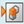
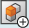

Show model views in a palette
You can view, activate, and manipulate PMI model views of a 3D model from the Model View Palette pane.
-
Choose PMI tab→Model Views group→Model View Palette

command. -
In the Model View Palette pane, double-click the model view to activate it.
You can also use the arrows on the top-right of the palette to activate the next or the previous model view.
Tip:In the search box, enter the model view name and select the required name in the list to select it in the palette.
-
To manipulate the view, right-click and choose the required command.
For more information, see Manipulate a PMI model view.
-
To create a new PMI model view, in the top-left corner of the palette, click Model View

.For more information, see Create a PMI model view.
How do I
Manipulate a PMI model viewEdit a PMI model view definition
Reorient a PMI model view
Use a 3D section view in a PMI model view
Learn more
Creating 3D model views with PMILook up more details
Create a PMI model viewReview command (PMI model views)
Review PMI model views
Activate or deactivate a view
Model View Options dialog box
Add To Model View dialog box
Remove From Model View dialog box
Edit Definition command (PMI, sections, model views)
Set View Orientation command
Upload Model Views command
Quick links
PMI dimensions and annotationsPMI in drawing views